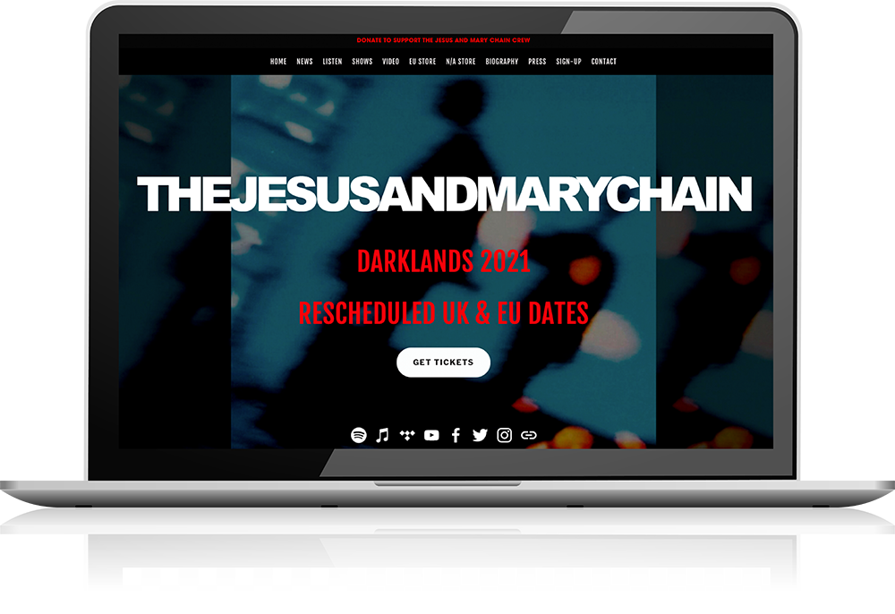
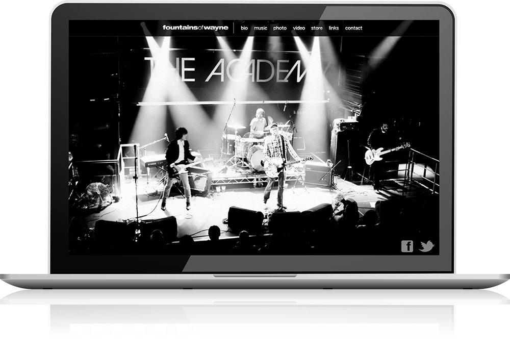
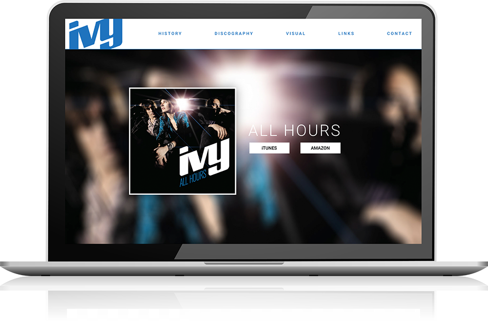
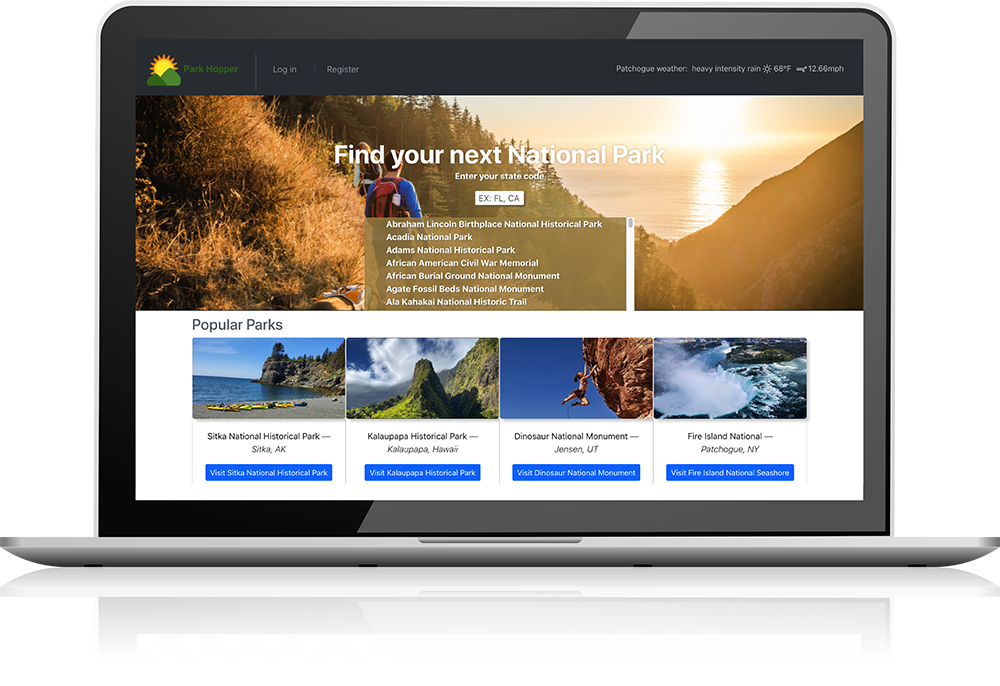
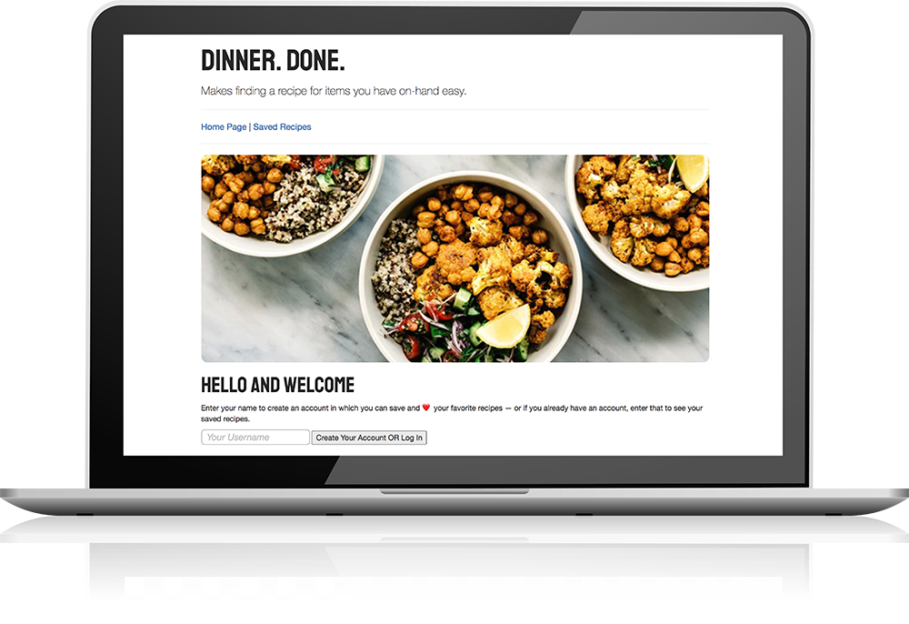
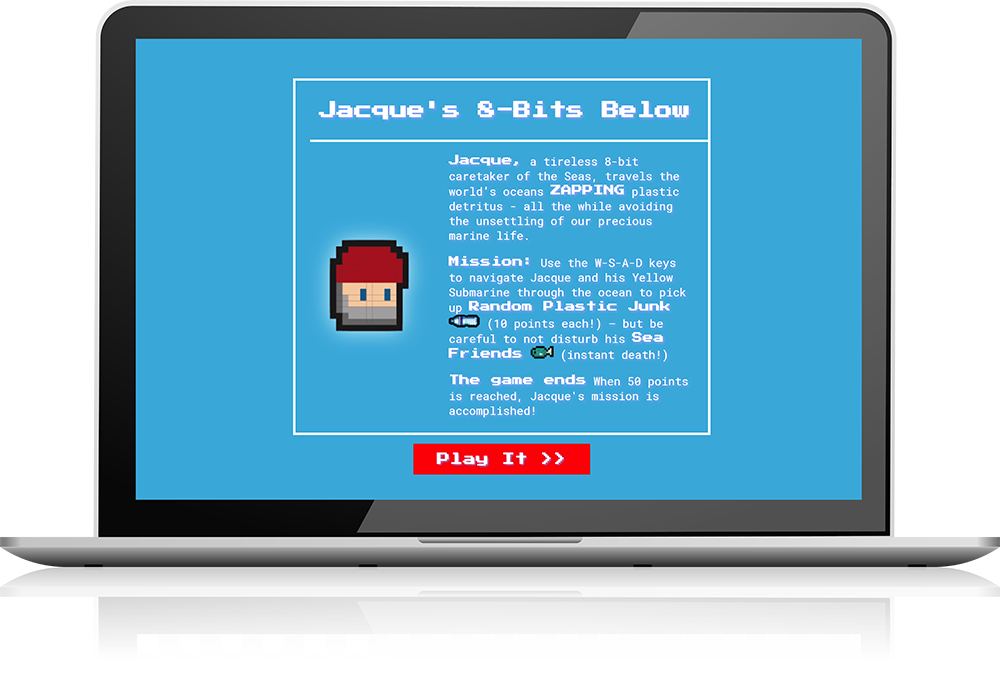

... my name is Brian, and I enjoy creating things that not
only function well, but look good too. My interest in web development started, years
ago, when I stumbled onto the View Source menu item on my browser and thought
“Wow — this is how it’s done!” I was hooked, and that’s when my journey into web
development began.
As a professional musician and audio engineer - I liked the creative, binary
relationship between music and technology. I spent years creating websites for friends,
businesses, events and bands - then moved on to work at some very exciting Seattle
startups, where I learned how to communicate and code with a team.
Fast forward to today - I am a Software Engineer and my passion for web development,
along with my design background, inspires me to develop visually engaging and responsive
web applications. I am detail-oriented, and open to any programmatic or
system design challenge; quick to pick up new technologies, and thrive in a
collaborative work environment.
Here are a few technologies I've been working with:
The Jesus And Mary Chain Official Website | Marketing Hub

This project challenge was to bring a historic brand with very distinctive sound and imagery
to
the web. It was to be their worldwide marketing hub, online retail presence and to
provide e-ticketing for performances. It was important that it felt familiar – to not
alienate
their fanbase.
This site was developed with Adobe Creative Suite, CSS, JavaScript, custom graphics,
typography and finally realized on SquareSpace. Is SEO and mobile compliant.
Fountains of Wayne Official Website | Marketing Hub

The official website for the rock band Fountains Of Wayne. The task was to consolidate their
online media, lyrics, store and social media links into one online center. At the client's
request, large
format,
random imagery was implemented.
This site was designed using Adobe Creative Suite, built with PHP, JavaScript, JQuery, and
CSS, on an
Apache server.
IVY Official Website | Marketing Hub

The band Ivy relies on its website as a 'source music placement portfolio' for music
supervisors and
commercial agencies. It needed to be clean, easy to navigate and to the point.
JavaScript, CSS, custom typography and imagery. Wordpress CMS.
Features e-commerce functionality. Email campaigns and web banners produced.
HashChat
HashChat is a real-time chat room style communication platform that
utilizes React hook useRealTime as real-time updater.
JavaScript, Material UI, SQL and Supabase postgREST-ful APIs
Park Hopper

Park Hopper is a National Parks finder application that allows the user to
search for parks by state, view up to date information on that park.
A weather API is leveraged giving current weather data.
The user can create a token-authorized account that allows them to save,
review and delete saved parks.
Full Stack Web Application.
React, Node.js, MongoDB, Express, Bootstrap,
JSON web token auth.
visit project see client codebase see server codebase
Dinner. Done.

Dinner. Done. is an app that allows the user to peruse thousands
of recipes, of all cuisine types, that match your available kitchen-found-items. The user
can create an account, save, delete and edit recipes.
Full Stack CRUD Web Application.
Express, Node, Sequelize, PostgreSQL, Axios, EJS, Javascript, CSS3, HTML5, Bootstrap,
RESTful API
8-Bits Below

This classic side-scroller JavaScript game leverages Vanilla Javascript, CSS3, HTML5, and
Canvas
to
organize and display visual aspects and multimedia to create an 8-bit style,
side-scroller adventure game. Employed collision detection features, displayed graphics,
dynamic counter and sound effects.
Javascript, CSS3, HTML5 Canvas, Howler
My inbox is always open and my phone is always on. Whether you have a question or just want to say hi, I'll get back to you right away!